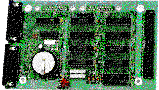

Previous
Next
TOC
Die SCSI Hostadapter der Fa. ICD
ICD Micro (alt) ICD Micro (neu)
Nur für den Einsatz im MegaST gedacht, da dieser Hostadapter direkt
auf die Stiftleiste des SCSI-Busses der Festplatte angesteckt wird
und bekommt die Spannungsversorgung über TERMPWR aus dem SCSI-Bus,
Der ICD Micro kann 4 Geräte (Gerätenummern 0-3) verwalten und gene-
riert KEIN Paritychecking.
ST Host Adapter "Classic"
Verwaltet bis zu 8 Geräte, kein Parity, DMA in und out. Für Einsatz
in Plattengehäusen. Verträgt fast keine neueren Platten.
Die Terminierung ist fest eingelötet.
AdSCSI, AdvantageSCSI
Verträgt schnellere Platten als der "alte", ab ca. Mitte 1989 wird
ein Paritybit erzeugt (läßt sich meistens anhand der huckepackpla-
tine leicht identifizieren als neue Ausführung), gleichzeitig wie-
derum korrigiertes Timing für die schneller gewordenen Platten.
Die Terminierung ist fest eingelötet.
AdSCSI+, AdvantageSCSI+

wie AdSCSI bzw. AdvantageSCSI, jedoch mit Echtzeituhr auf SCSI-Ad-
resse 6.
weiterblättern
Kapitel Die SCSI Hostadapter der Fa. ICD, Seite 1